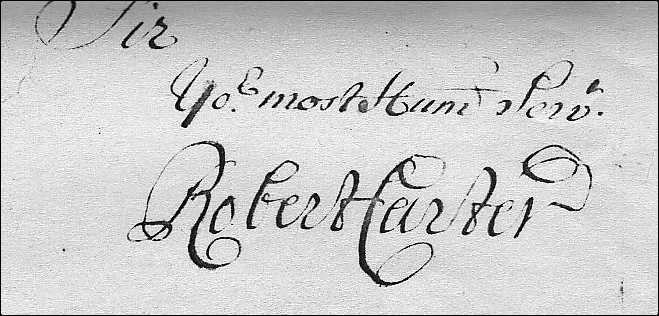
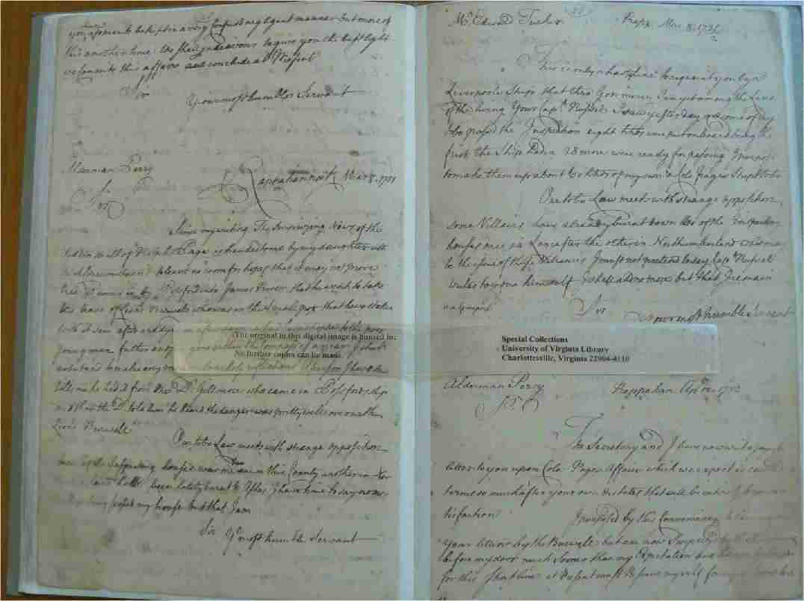

This site is currently archived as static HTML pages. Links to internal pages should work, but search functionality may not.
Transcribed, Edited, and Annotated by Edmund Berkeley, Jr.
This site includes transcriptions of the diary, correspondence, and papers of
the richest and most important man of his day in Virginia, who owned at his death at least
300,000 acres containing many farms and plantations that produced tobacco and other crops for
sale, some 750 slaves to work those plantations, and large sums of money invested in Virginia
and in England. Robert Carter was a member of the Council of Virginia, acting governor 1726-1727,
and a political power in the colony. He had received a classical education in England, and
corresponded widely both within the colony and with merchants in England.

- This site contains transcripts of all the extant Robert Carter texts of which I am aware as of January 13, 2009.
- I am unable to respond to general or genealogical inquiries about Robert Carter.
- I would very much appreciate messages about errors found on the site. See "Contact the Editor" in the "Site Directory" below.
This page revised November 10, 2015.
Site Directory
While interest in making Robert Carter's letters generally available to scholars and the
public began in 1938 with the publication of Louis B. Wright's edition of a letter book of Carter's
that had strayed west from Virginia to the Huntington Library in California, the present project
traces itself to the late 1940's. At that time, more letter books and a diary of Carter's were
discovered. Three of the letter books were acquired by the Virginia Historical Society, Richmond,
and four letter books and the diary by the University of Virginia Library, They are now held in the Albert and Shirley Small Special Collections Library, University of Virginia. Charlottesville. Francis
L. Berkeley, Jr., then curator of manuscripts at the University of Virginia Library, began work
immediately on a project to publish these texts. Transcripts were prepared according to the editing
principles of the time: punctuation and capital letters were added to sentences, abbreviations
expanded, and the like. Mr. Berkeley continued to work on the project until he left the Library
to become executive assistant to the president of the University in 1961. One of his plans for
retirement was to resume the editorial work which he did after 1974 for several years. Sadly, a
progressive eye disease put an end to his dream, and he was forced to turn over to the current
editor all of the material he had accumulated over the years.
I worked on the project sporadically during a busy career as curator of manuscripts, and
later, as the first director of special collections at the University of Virginia Library. As I had written
my master's thesis on "King" Carter, and had read all the letters and the diary for that work, I
was familiar with the texts.
My work has been supported by the University of Virginia Library Faculty Research
Committee which provided a number of grants of released time as well as funds for the
employment of student assistants. My thanks go to the Committee for its support, and to Sherry
Armstrong, Milly Fife, and Susan Garrahan for their cheerful and invaluable assistance. Most
important of all was a 1988 grant from the Virginia Foundation for History and Public Policy, to
which I also extend my thanks, that grant enabled me to take a semester's leave from my duties at the
Library during which I completed new transcripts of the letters to the literal style of today's
editorial work, and wrote footnotes for many of the letters. My intent remained book publication
for the texts, and I prepared an initial manuscript for the early letters.
My interest in computer work and the early development of electronic texts at the University
of Virginia Library exposed me to this process, and to HTML and SGML tagging. My
membership in the Association for Documentary Editing kept me aware of the work of the Model
Editions Partnership whose reports have been particularly helpful. As I approached my own
retirement, I decided that I would work immediately on an electronic edition of the Carter texts
making use of the facilities and interest of the Electronic Text Center (now Schiolars' Lab) of the University of Virginia Library and its director, David Seaman.
After spending some time tagging texts with SGML, David Seaman convinced me to convert to XML, the tagging scheme of the future. It has advantages for me because it allows me to review and correct "finished" texts on my home computer screen without first transferring them to the Library's server.
This electronic edition will place Carter's texts before
those interested much more rapidly than otherwise, and will add to the body of sources readily
available to researchers interested in early eighteenth-century Virginia.

Pages from a Carter letter book in the hand of a clerk
The texts consist chiefly of nine volumes of copies of outgoing letters, 1701-1710, and
1720-1732, drafted by one or another of several clerks or occasionally by one of his sons, from
Carter's dictation or general directions. In addition there are: a one-volume diary, 1722-1727 with a few days in January 1728, in
Carter's hand; a dozen or more recipients' copies of letters; a larger number of
nineteenth-century transcripts for letters dated between 1717 and 1719 copied from a letter book
not extant as well as for later letters found in the extant letter books; and a few letters addressed to Carter. No texts have been found for 1711-1714, and
there are only a few recipient's copies of letters in 1725-1726. Thus, this project deals with texts
written out at Carter's direction by a variety of persons in addition to the text of his diary in his
hand.
Approximately 750 letters survive, and of these, some 700 are drafts found in the letter
books. These texts are reasonably easy to read, the major problems coming from the variety of
handwritings and styles of punctuation and capitalization of the various clerks with the additional
complication of a number of texts available only in nineteenth-century transcripts. The disorder
in chronology of the letters is considerable in some of the letter books because the clerks
apparently would pick up the nearest book when Carter was ready to dictate.
If there is more than one letter with the same date, the letters are in order alphabetically by the
recipients' last names.
Of the surviving recipients' copies of his letters (generally written out by clerks and signed
by Carter), perhaps three or four are duplicated in the letter books. Many of the extant letters are
addressed to merchants or other persons in Britain, and Carter followed the colonial practice of
sending duplicate letters by different ships. Only one such example survives. The Huntington
Library has two recipient's texts of the letter of June 30, 1724, to Colonel William Cage, both
of them written by clerks, signed by Carter and sealed with his arms, one sent
"per the Princess Carolina, Captain Holladay," and the other "per the Spotswood, Captain
Bagnell."
The diary covers the years 1722-1727 with a few days in January 1728, and is in very bad physical condition, the edges of many pages having flaked off. It is difficult to read at times due to Carter's carelessness and his
habit of abbreviating words. Frank Berkeley wrote of the diary that it is "highly telegraphic
in style, almost as terse as shorthand at times in its frugality of expression, and almost totally
lacking in punctuation." Carter's spelling was inconsistent at best, and entirely freewheeling
at its worst. He was voluble only in regard to his health in this diary, and often frustratingly refers
to his "other book" where details of happenings apparently were recorded. The poor
physical condition of the diary with its numerous holes and tears in the text have made the use of
large numbers of square brackets in the transcript necessary.
The following rules for transcription, dates, and display on computer browser screens have been used:
- Two texts are available. In the "Original Spelling" text, the spelling, grammar, capitalization, and punctuation of the original texts have been followed insofar as possible, given the extreme difficulty of duplicating some of the conventions of eighteenth-century handwriting on a computer screen. For "Modern Spelling," software at the Scholars' Lab replaces the original spelling with the modern when that has been indicated in a tag.
- Superior letters are generally lowered to the line.
- Clear abbreviations are retained in the "Original Spelling" text, and are expanded in the "Modern Spelling" text..
- Square brackets are used to indicate editorial additions such as an expansion of an unclear abbreviation, or a conjectural reading of unclear or missing text.
- An elipsis inside square brackets is used to indicate text that is present but illegible.
- The thorn is expanded to "th" in all instances.
- The various "tailed P" symbols used for "per," "pro," etc., are silently
expanded as appropriate.
- The ampersand is retained throughout.
- In most cases it has proved possible to read text that was struck through in the draft letters. It has been entered into the transcribed text but tagged so that it shows in red with the word or words lined through. If the deleted text is illegible, it shows in red with the word "illegible" struck through.
- Dashes used as flourishes and punctuation at the end of sentences are retained.
- In writing out the drafts of the letters, Carter's clerks frequently placed a dash at a 45 degree angle under the salutation that Carter dictated. These dashes have been converted into dashes following whatever salutation is given.
- Contracted words over which the clerks placed a tilde or straight line to indicate an expansion was to be made when writing the final draft (a convention of the time) have been silently expanded. Carter's clerks used a stylized abbreviation -- "hhds" -- for the word "hogsheads" in which the tail of the "d" was not only swept up and to the left, as was common at the time, but was then circled down and back across the three letters and down to form the terminal "s." Because this abbreviation seems to incorporate a tilde, the abbreviation "hhds" has been expanded silently when the tilde is present.
- Carter often dictated postscripts to letters and they are not necessarily found in the letter books beneath the letter to which they pertain. Postscripts are added to the foot of the letter to which they pertain, and the date of the postscript is retained and added to the heading date of the letter. Undated postscripts are added to the foot of the letter to which they pertain if that can be determined. If the letter cannot be identified, the undated postscript is given a tentative date determined by its place in the letter book.
- Occasionally, Carter wrote a draft of a letter into a letter book, or edited the texts that the clerks had written from his dictation. Such changes from the clerk's to Robert Carter's hand are indicated by the use of italics for Carter's handwriting, and a note is given to alert the reader.
- All dates are given Old Style (Julian Calendar) but with the year beginning January 1st rather than March 25th; the virgule and numbers for the old year are dropped silently in headings, but are retained at the head of the transcript of the letter or diary entry.
- Words and phrases written above the line, in the margin, at the foot of the page, etc., that were intended to be inserted in the text, are placed in the text where they belong, displaying in green. In addition, such words or phrases written above or between lines, also display raised above the line.
- Links to footnotes, the "Brief Notes on Often-cited Persons, Places, and Things in Robert Carter's Diary and Letters," the "Project Bibliography," and other sources are displayed in blue, and are underlined. Clicking on them will take the viewer to the associated text.
- There are a number of tables in Carter's documents, and the software used for this project forces the use of grid lines in their display although there were none in Carter's originals.

Robert Carter lived his adult life in Lancaster County, Virginia, on the southern side of the Northern Neck peninsula,
not far from the point at which the Rappahannock empties into Chesapeake Bay, where he was born in 1663 and died in 1732, at the home, "Corotoman," established there by his father. He was educated in England by his father's direction,
and acquired a life-long appreciation of books and reading, and the value of a
good education.
He inherited property from his father, and a sizeable estate on the death of his older half-brother John,
but through his own business abilities and the opportunities that he seized, he had acquired
well over 300,000 acres of land, some 750 slaves (see the list of the slaves in the inventory of his estate),, and a considerable cash estate by the time of his death
according to his obituary in London's Gentleman's Magazine. No other Virginian of his
generation was so successful in his political career, in the marriages made by his children,
and so ruthless in building his estate for the benefit of those children.
He was astute in business, politics, and land speculation, and his fortune, political successes,
and estates, vast even in a time of insatiability in land ownership, demonstrate his success. His
acute sense of his own importance, and knowledge of the power that his wealth and political
acumen had brought him, earned him the derisive nickname of "King,"
His political power was firmly based in the inheritances that he received from his father,
Colonel John Carter (c. 1613-1669), from his older
half-brother, Lt. Col. John Carter (c. 1648-1690), and from
family connections. John Carter, the immigrant, made several voyages to Virginia before
establishing himself there permanently between May 1638 and January 1641. Apparently he
brought with him useful political connections and considerable money for he soon was chosen
burgess for Nansemond River in Upper Norfolk County. But
his attention was further north; he acquired land by patent and purchase in what was then Charles River County (to become Lancaster in 1751). Although he
appears first in the Lancaster County records in January
1652, he had apparently not yet "seated" his land and had to obtain that April an act of the
Assembly for an extension; he moved there soon afterwards.
Through his connections and his wealth, John Carter rose quickly to prominence in the
colony, and by 1657 he was a member of the council. His five marriages produced only six
children, several of whom died in infancy. Most important to Robert was his older half-brother,
John, who raised him after their father died in 1669.
John Carter I followed the custom of the time in bequeathing most of his property to his
eldest son, but he made provision for Robert, leaving him 1,000 acres on a branch of Corotoman,
one-third of his personal estate, "his mother's hoop ring & christall necklace," and
a sixth part of his books. Most important for Robert were the specific instructions that his father
wrote concerning his education. Robert was to have a tutor who would teach him both English and
Latin.
John Carter II, who was about fifteen years older than his brother, obeyed their father's
instructions, and furthered them by sending Robert home to England for higher education. The
custom of the time was that boys were sent to England when they were nine or ten, and Robert
probably sailed to England about 1673. From a letter of Robert's written late in his life when he
was quarreling with his English factor, William Dawkins, over the education of his own sons and
grandsons, we know that he spent at least six years in England, living in the home of merchant
and family friend, Arthur Bailey, and learning from him, and from the opportunities presented by
living with the merchant, much of the tobacco trade and its marketing end.
Robert's education in England undoubtedly included thorough grounding in the Christian
religion. Most of his schoolmasters would have been clergymen, and would have considered
religious education a fundamental requirement of their curricula. While Robert always considered
himself "of the Church of England way," he was not intolerant of dissenters, and Louis
B. Wright has written in several places of the books by Puritans and others in the libraries of both
John Carters which Robert would have had access to before and after his years in England. He
would purchase titles on religious subjects for his library, which included the books that he
inherited from his brother and father, through the rest of his life.
Robert returned to Virginia about 1680 to take up the life of a Virginia gentleman on the
modest estates he had been left by his father. He built a house on the home property at
"Corotoman," however, a brick story-and-a-half structure of three rooms. He lived in
it until he moved into the larger two-story mansion which dominated the Corotoman landscape for
a decade beginning about 1720.
John Carter II continued much of the service and prominence that his father had established
as the norm for the family. He is referred to as captain at first, but by 1672, his rank is that of
lieutenant colonel, a title, presumably from his militia service, that he is accorded until his death..
He served as sheriff in 1673 and again in 1678, burgess, and at other times, he was collector of
the levy.
Unlike his younger brother, John Carter II was not obsessed with the acquisition of land.
Checks of the land office records do not show that he took out any patents. Apparently running
his farms successfully, raising his brother, and being active in county affairs were sufficient for
him. He married first Elizabeth Hull prior to 1675 when he is named in the will of his
father-in-law. This marriage produced one daughter, Elizabeth, who was to marry John Lloyd in
1693. Elizabeth Hull Carter was dead by 1684 when Lancaster records mention a marriage
between John Carter and Elizabeth Travers who outlived him to marry Christopher Wormeley, dying herself in 1693.
By 1688 it was apparent that John Carter's principal heir was to be his brother, and this
greatly improved the latter's prospects. Robert was married in that year to Judith Armistead, daughter of John
Armistead of "Hesse," Gloucester
County; their son, John, was born about 1689, and four other children followed,
Elizabeth in 1692, Judith and Sarah who died in infancy, and a second Judith in 1695. Because
no letters or other texts survive from this period of his life, little is known about his wife, or the
early years of his children, but presumably the traditional Virginia custom was followed in raising
and educating the Carter children. Having renounced the carefree life of the bachelor, Robert was
considered ready for the types of public service that his father and brother had undertaken.
Robert's first position was that of justice of the Lancaster Court, an office for
which he took the required oaths on 10 June 1690. Election as a
vestryman for Christ Church
Parish followed on 8 November 1690; about a year later he was chosen
church warden, a position he retained until his death. And service to
the colony soon ensued with his election as burgess for the session
beginning 1 April 1692. He was returned to every session of the Burgesses until 1699 with the
exception of the two sessions held in 1693.
As chairman of the Committee of Propositions and
Grievances in 1695, Carter steered the members to present a protest against the actions
of the Northern Neck proprietary agents, and the proprietary itself. This was his last effort of this
sort because the appeal of acting as Virginia agent for the proprietors was soon to bring him over
to their side.
He took a leading role in the work of the House, and "in September 1696 Carter was
elected Speaker over five other nominees. Carter was not chosen as
Speaker for the 1698 session, but was in April 1699. Also at this session, the House chose Carter
as Treasurer of the colony, an office which, as Jon Kukla has
observed, was one usually associated with the Speaker. However, the House took the most unusual
step of allowing Carter to retain the office of Treasurer even after his appointment to the
Council was confirmed in England by the Privy Council on 14 December 1699.
There is no indication in the surviving records that Carter had any formal training in the
law, but he was interested in it. Most planters of his day found it necessary to learn something
of the law because many served as justices. Service in the House
of Burgesses, particularly assignment in 1695 to serve on a committee to revise the
laws of the colony as the Board of Trade had ordered,
may have spurred Robert Carter's interest. By the time of his death, he had about 100 law books
in his library, more than one-third of its total. He never hesitated to include references to the law
in his letters.
In colonial Virginia, one official post led quickly to others; a seat in the Council brought
several posts with it. Carter was appointed on 3 June 1699 as colonel
and commander-in-chief of the Lancaster-Northumberland counties
militia; on November 11th of the same year the governor appointed him as naval
officer and receiver, a post of value because of the
considerable income it generated, and because of the power over one's neighbors that it meant
By 1701, when the first of the extant letters was written by Robert Carter, he was already
one of the most prominent men in the colony as a member of its council, and the significant events
of the early portion of his life had occurred, including the death of his first wife in 1699 and his
second marriage (to Elizabeth Landon Willis, by whom he
would have ten children) in 1701. The letters dated between 1701 and 1710 included in this
project reflect little of Carter's personal, political, and mercantile interests of that time because
they are ones he wrote as one of the trustees of the children of his friend, Ralph Wormeley, and
deal with their affairs rather than his own. There are a few that step outside his duties to his
friend, and they show his interest in land acquisition, a topic that would occupy him all of the rest
of his life.
There is little extant on his first term as Virginia agent for the proprietors of the Northern
Neck, an arrangement of importance to Carter because it gave him a taste of how profitable that
office could be. A separate section of this project concerns Carter's work as the proprietor's
Virginia agent.
There are no extant texts for the years 1711-1714, one in 1715, none in 1716, and a few
for the years 1717-1719 from various sources including some nineteenth-century copies made from
a letter book no longer extant. Beginning with the year 1720 and continuing until Carter's death
in August 1732, the record is fairly full, and a good picture of his management of his affairs,
political interests, and daily routines can be drawn.
The most important events of the last twenty-two years of his life were to be his term as
acting governor of the colony after the death in July 1726 of Hugh Drysdale until the arrival of
William Gooch in September 1727, and his second term as agent for the proprietors of the
Northern Neck. By the time that Carter became acting governor, he was in his sixties and in poor
health. His extant diary, kept between 1722 and 1728, gives information his concerns while
tantalizing with references to his "other book" in which he apparently wrote more
detailed entries. His drive to acquire land for his children led him to acquire in 1720 a lease of
the propriety from Lord Fairfax, and to take patents on huge quantities of land moving ever
westward in Virginia with his acquisitions.
It is in his management of his highly successful agricultural operations and in his operation
of the proprietary that our interest in him lies. The hundreds of letters that he wrote in this period
and the one extant diary provide a wealth of information for those interested in Virginia in the
early years of the eighteenth century. Management of his farms occupies much of Carter's time
and his writings. The majority of his letters are written to British merchants consigning tobacco
for sale, ordering goods for his family, servants and slaves, and the like, but as many of the
merchants were at least old friends, there are frequent comments about Virginia events and people.
Carter orders clothes, books, and newspapers for himself, writes about his poor health, and seeks
favors ranging from wine to offices for his sons.
Robert Carter was influential in his own day and left a family dynasty that continues to this
day. At one time, he was estimated to have over 50,000 descendants including six governors of
Virginia, three signers of the Declaration of Independence, and two presidents of the United
States. Five sons and five daughters survived to marry well and were themselves prolific. His
letters and other writings reveal his drive to establish this dynasty, and the skill and intelligence
he brought to this effort.
Sources
There are two academic lives of Robert Carter that treat his life in detail: Carl F. Canon's
masters thesis, "Robert ( "King" ) Carter of "Corotoman" for Duke
University, 1956; and "Robert King Carter," a master's thesis at the University of
Virginia by Edmund Berkeley, Jr., in 1961. A summary account of Carter by Edmund Berkeley, Jr., may be found in Volume 3 of the Dictionary of Virginia Biography, (Sara B.
Bearss, John G. Deal, et al., eds. [Richmond: Library of Virginia, 2006])
Details of the early Carter genealogy are to be found in Christine Jones, John Carter I of "Corotoman" Lancaster County, Virginia. (Irvington, Virginia: Foundation for Historic Christ Church, Inc., 1977). Details of Carter's wives, children, and descendants may be found in Florence Tyler Carleton, compiler. A Genealogy of the Known Descendants of Robert Carter of Corotoman. (Irvington, Virginia: Foundation for Historic Christ Church, Inc., 1983).
One letter book of
Carter's has been published: Louis B. Wright, Letters of Robert Carter 1720-1727:
The Commercial Interests of a Virginia Gentleman (San Marino, CA: Huntington
Library, 1940). Wright also wrote of the Carters' libraries in "The "Gentleman's
Library" in Early Virginia: The Literary Interests of the First Carters,"
(Huntington Library Quarterly, I (1937), 3-61).
His schooling in England has been
covered very well by Alan Simpson in "Robert Carter's Schooldays" , an article in the
Virginia Magazine of History and Biography (94[April 1986]:
161-188).
And Jon Kukla in Speakers and Clerks of the Virginia House of
Burgesses, 1643-1776 (Richmond: Virginia State Library, 1981) gives the details
of Carter's career as a burgess and council member.
Lloyd T. Smith, Jr.'s, detailed study of Carter's will is also very useful: Robert Carter of Corotoman 1663-1732: An Analysis of His Last Will and Testament. (Irvington, VA: Foundation for Historic Christ Church, 2009.) Smith's equally detailed study of the letter book of Carter's executors is a wwelcome addition: The Executors' Letters of Robert Carter of Corotoman, 1732-1738. [Irvington, VA: Foundation for Historic Christ Church, 2010].
Fairfax Harrison's monumental study,
Landmarks of Old Prince William (Berryville, Va.: Virginia Book
Company, 1964, a one-volume reprint of the 1924 two-volume edition) remains invaluable for its
detail about the development of that area of Virginia and the proprietary. There are numerous
references to Carter and others of his period in Earl G. Swem's Virginia Historical
Index which indexes a half-dozen publications on Virginia history and genealogy.
On September 18, 1649, British King Charles II gave a patent for a large section of Virginia between the Rappahannock and Potomac rivers, extending west to the heads of these rivers, to seven of the loyal followers who were in exile with him. The lands conveyed in this patent, known as the Northern Neck Proprietary, were to involve Robert Carter heavily during two periods of his life, and the second of those periods was to provide him with an opportunity to build the fortunes of his family in a way unprecedented in Virginia.
There were problems with the Proprietary from the beginning. These included the actual scope of the patent since Virginians and those in England defined the heads of rivers by different standards. Collecting quit rents (taxes) from settlers in the Proprietary was very difficult as was the enforcement of other rights exercised in such royally-granted areas. By the turn of the eighteenth century, control of the Proprietary had come to one man, the fifth Lord Thomas Fairfax who also inherited a new patent issued by King James II in 1688 which established the western limits of the Proprietary as the "first heads or springs" of the Potomac and Rappahannock rivers, meshing it nicely with southern border of the Maryland Proprietary to the north. While some of the original proprietors' rights had been lost, the collecting of quit rents from settlers had been established through the efforts of their agent in Virginia, William Fitzhugh, and through Lord Fairfax himself who persuaded "Richard Lee, a large and widely respected Northern Neck landholder, to make quit rent payments to the Proprietors." (Brown, p. 37.) This ensured that the proprietors received income from their property in Virginia, and made it extremely valuable to them.
Robert Carter lived in the Proprietary as Lancaster County lies in it. He had therefore been well aware of it from his youth. He had, as a member of the House of Burgesses, led a fight against the Proprietary in the session of 1695 that had been brought on by the Proprietor's agents, George Brent and William Fitzhugh, attempts to establish the proprietors rights to escheats, quit rents, and other matters. "Carter made a savage attack on the agents. Under six heads he listed the 'abuses' practiced" and seems to have overstated the case "by what were acknowledged to be in the main unfair accusations." (Davis, Fitzhugh, p. 43.)
William Fitzhugh died in October 1701 and George Brent had died several years earlier. Lord Fairfax approached the great London merchant, Micajah Perry, widely acknowledged to be extremely knowledgeable about Virginia for which he had been agent, for advice about a new agent in the colony. Perry recommened Robert Carter, and he was accepted.
He showed diligence in its interests--and to his own profit. He quickly increased the number of those who followed the example of Richard Lee in settling for past-due quit rents. Deputies promptly collected current accounts. More and more grants were issued in the western, unoccupied parts of the Northern Neck. Carter did not deny himself what he granted others. Soon after he became agent, he had two friends patent about 13,500 acres, which were transferred to him. In 1709 he "took up" 912 acres of choice land on the Occoquan in the name of a three-year-old son. (Freeman, Washington, p. 489.)
After Lord Fairfax died in January 1710, his son inherited the title and his five-sixths shares in the Northern Neck. In May, his grandmother died leaving the new Lord Fairfax her one-sixth share. However, because he was only sixteen years old, the affairs of the Proprietary fell to his mother, Lady Fairfax. She had advisors, including merchant Thomas Corbin, who counseled her that the return from the Virginia lands was too low and that she should try a new arrangement. A lease for a period of years paying about £425 per year was negotiated in 1711 or 1712 with Virginia council member Edmund Jenings (Corbin's brother-in-law), and Corbin's nephew Thomas Lee was appointed Jening's deputy. As Jenings, deep in debt and poor in health, remained in London for some time, it was Lee who opened the new Proprietor's office in Virginia.
Although Robert Carter complained about the management of the Virginia agency after he took it over again, Thomas Lee proved a good steward for Lady Fairfax. "Where earlier agents had been content to describe in the text of a grant the lets and bounds, Thomas Lee inserted the surveyor's plat in the Land Books and by so doing clarified records that otherwise might have become confused beyond comprehension." (Freeman, Washington, p. 494.)
Jenings returned to Virginia in the winter of 1716 and resumed his seat on the Council. His debts had become severe, and his payments to Lady Fairfax for the lease of the Proprietary lagged badly. Thus, when she died in 1719, leaving only a life interest to her five-sixths of the Proprietary to her twenty-six-year old son, and naming a distant cousin, William Cage, as trustee of her estate. Cage, fortunately for Robert Carter, consulted Micajah Perry about a new lessee for the Proprietary, and Carter and Perry negotiated a lease on much the same terms as Jenings had had.
Douglas Southall Freeman wrote that Robert Carter achieved three major improvements in the Proprietary while holding the lease. He quietly arranged to have the boundaries of the Brent Town tract surveyed in order to avoid a promised conflict with its owners and those living there. This opened other lands for settlement. He "renewed the dispute over the boundaries of the Northern Neck," and did much to enable small farmers to take up lands on the frontier. (Freeman, Washington, p. 495-96 .)
The great benefit of holding either the agency of or a lease to the Proprietary was the opportunity of learning where the best lands lay, and in taking out patents for them. It was quite legal for the agent or lessee to do so as he paid fees and quit rents as any other applicant would. Jenings and Lee profited by their years as agents and lessee, and Robert Carter profited enormously. At the beginning of his second term with the Proprietary, he had five sons, and he was determined to provide handsome estates for each of them. He had already acquired extensive land holdings, but the lease enabled him to acquire far more. Many of his letters written over the twelve years that he held the lease show his iron determination to make sure that he reached his goal. He was ruthless in his approach, and thus hypocritical at times, writing to Thomas Lee December 14, 1728, "As to your picking and heaving out all the bad lands, I can never agree to such a method," while instructing his surveyor a few years earlier, "Where you find the Lands are barren for a considerable Quantity [ . . . ] ether there I would have them left out and new surveys begun upon the better Lands." (Carter to Thomas Barber, April 13, 1724.)
Carl Cannon's thesis on Robert Carter includes appendices that detail Carter's land holdings and the patents that he took out during both periods of connection with the Proprietary. Cannon was able to account for over 295,000 acres at the time of Carter's death in 1732, with many tracts listed for which he could not find acreages. (Cannon. Robert Carter, pp. 268-278.)
One cannot understand Robert Carter without knowing something of the Northern Neck Proprietary and his relationship to it. Many of the letters written during the period 1720-1732 (that of the bulk of his exatant papers), contain references to his interest in land and its acquisition.
Brown, Stuart E.Virginia Baron; the Story of Thomas, 6th Lord Fairfax. (Berryville, Va.: Chesapeake Book Co., 1965.)
Carl F. Canon. "Robert ( 'King' ) Carter of 'Corotoman.'" Duke University thesis, 1956.
Davis, Richard Beale. William Fitzhugh and His Chesapeake World, 1676-1701. The Fitzhugh Letters and Other Documents. (Richmond: Virginia Historical Society, 1963.)
Freeman, Douglas Southall, George Washington, A Biography. (New York: Scribner's, 1948). Vol. 1. See Apprendix I, "The Northern Neck Proprietary to 1745," pp. 447-525, for an excellent discussion and the text of the first patent (pp. 513-519) issued by Charles II.
Brent Town was a speculative land development put together by Nicholas Hayward (d. ante 1697) of London, a notary public, merchant, and speculator. Hayward assembled a syndicate composed of London
merchants Robert Bristow (1643-1707) and Richard
Foote (his brother-in-law), and George Brent of
"Woodstock," Stafford County.
The syndicate purchased on January 10, 1686/87, from Lord Culpeper, by
then the controller of the Northern Neck Proprietary, 30,006 acres in Stafford County
"Between the Courses of the said Two Rivers, Rappahannock and
Potowmack . . . upon and Between the Southwest and Northeast Branches of
Ocaquant Creek. . . ." Hayward obtained a dispensation from King James II that would
allow the Hugenots that he hoped to settle on the land to have "the full exercise of their
Religion."
The town that Hayward hoped to build on the tract was called Brenton, "but
this was corrupted by local [Virginia] usage into Brent Town, and that came to be the designation
of the whole tract." Hayward was not successful in persuading Hugenots to move to the
lands, and, after flirting with other possibilities, the tract remained unsettled and unsurveyed at
the time of his death about 1697. The members of the syndicate and their heirs bequeathed and
sold their rights in the Brenton tract for generations. Robert Carter was to have considerable
trouble over the tract after becoming leasing the Proprietary in 1721. He was pressed to
grant lands in the area of Brenton, but it was very difficult to do so because the tract had not been formally
surveyed. Carter quietly had a survey made, and used it to grant lands outside what he considered the Brent Town grant to be, but a formal survey was not made until 1737-1738.
Sources
Fairfax Harrison, in a chapter
entitled "Brent Town, Ravensworth and the Hugenots," in his Landmarks of Old Prince William (from which
all quotations used here are taken) tells the story of Brent Town extremely well. See also Davis, William Fitzhugh, p. 191, fn 2, and
other sources.
The earliest letters of Robert Carter's that have been located -- fifty-three items
dated between 1701 and 1710 -- concern the estate of his brother-in-law, Ralph
Wormeley (1650-1701), member of the Council and Secretary of State of Virginia, who lived in
very grand style at "Rosegill" Middlesex County , on
the Rappahannock River. Carter had married Judith, and Wormeley Elizabeth, the daughters of
John Armistead of Gloucester County .
Wormeley, second of that name in Virginia, left two sons, Ralph (ca. 1681-1714) and John
(1689-1727), and named them his executors. Because his sons were minors at the time of his
death, his "dear friends and relations," Edmund Jenings ,
Robert Carter, Thomas and Gawin Corbin , and Edwin
Thacker , who were asked in Wormeley's will "to aid and assist" his sons
in their duties, actually assumed control of the estate. All the trustees were planters but
Thomas Corbin who had become a merchant in
London. Carter was responsible for the Wormeley estates on the
Rappahannock while Jenings supervised those on the York River near his home, "Ripon
Hall."
Personal relationships between Wormeley's "dear friends" were complicated.
Wormeley and the Corbins were first cousins as their mothers were sisters, Alice and Agatha
Eltonhead. A third Eltonhead sister, Eleanor, was Robert Carter's father's second (of five) wife.
Gawin Corbin was also Wormeley's son-in-law, having married his daughter Katherine. Edmund
Jenings was married to another daughter, Frances. Edwin Thacker was a cousin of Wormeley's
through the Eltonheads.
Extracts from Carter's letters concerning the estate were published in
the William and Mary Quarterly in 1909,and were mentioned
in an earlier article in the Virginia Magazine of History and
Biography. Both articles referred to the volume containing the originals as one
used chiefly to record processioners' returns for Christ Church Parish, Lancaster County; the
volume was then in the Lancaster County courthouse. Robert Carter was a vestryman of this
parish and apparently had custody of the volume. Care of his friend's family would have been a
religious duty to Carter, and he had his clerks use the volume to record copies of his letters
concerning the Wormeley estate. The volume was located in Archives Research Services, Library
of Virginia, Richmond, where it is described as: Church Records, Christ Church Parish,
Lancaster County, Processioners' Returns, 1711-1783, and Wormeley Estate Papers, 1701-1710
(Acc. No. 30126).